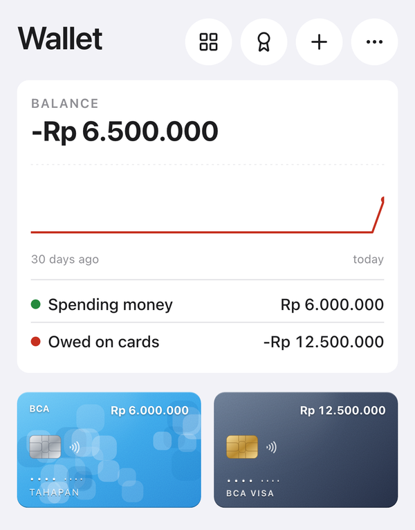
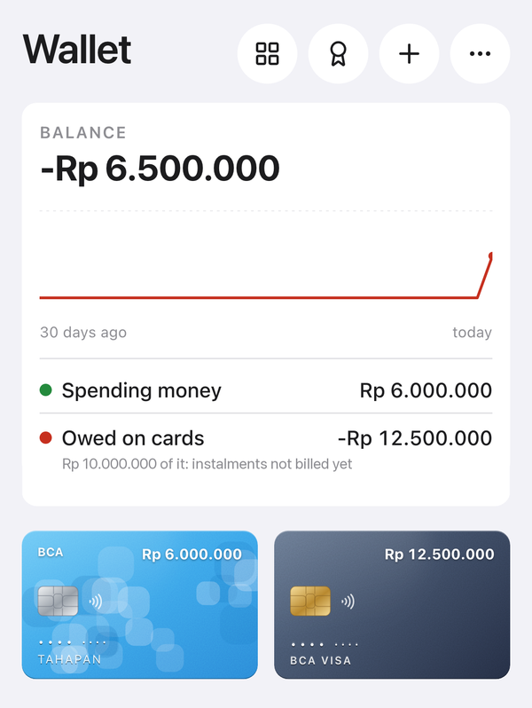
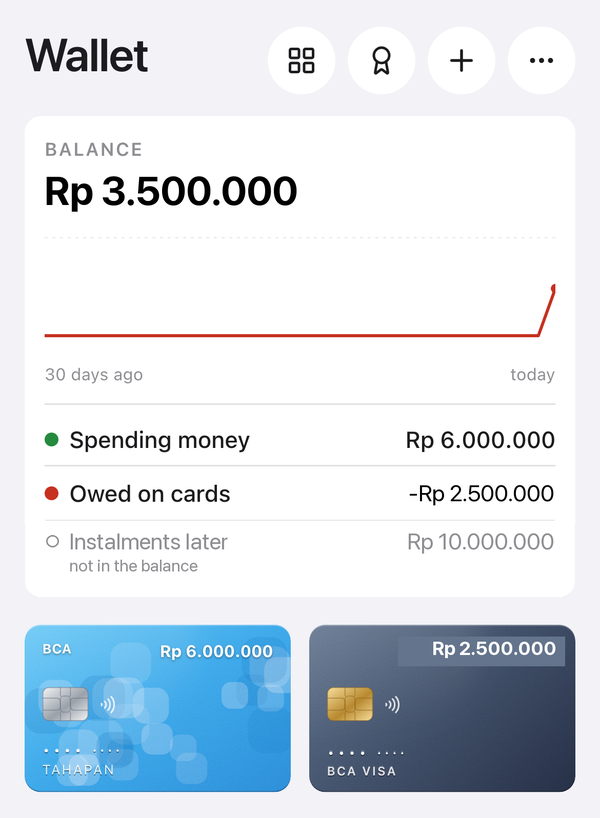
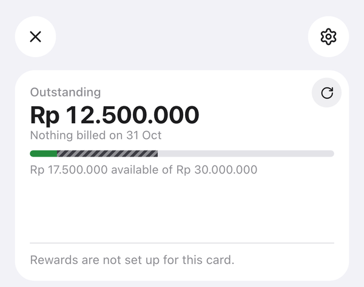
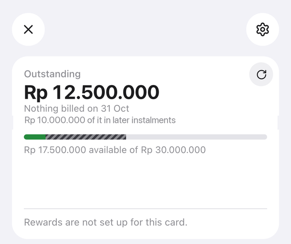
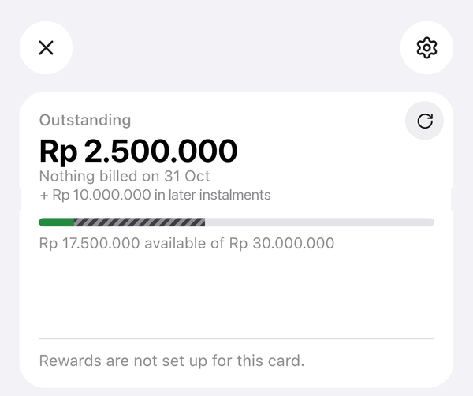

Invented example: BCA Tahapan Rp 6.000.000; BCA Visa with a Rp 12.000.000 laptop on 6 × Rp 2.000.000 (first one billed this month) and Rp 500.000 of groceries. Owed in full: Rp 12.500.000. Due now: Rp 2.500.000 (groceries + this month's instalment). Later: Rp 10.000.000 (5 instalments). Net worth counts the full Rp 12.500.000 in every option. TODAY = real screenshots (Wallet's Grid view, the card's back); options are the same screenshots edited.
TODAYBalance −Rp 6.500.000
Owed on cards counts all 6 instalments, so the balance goes below zero.

1Same figures, explained
Balance still −Rp 6.500.000; one grey line says Rp 10.000.000 of what is owed is instalments not billed yet.

2Only what is due counts
Owed on cards −Rp 2.500.000 → Balance Rp 3.500.000. "Instalments later Rp 10.000.000" is shown in grey, not in the balance. The card tile shows Rp 2.500.000.

TODAYOutstanding Rp 12.500.000
The whole plan is in the figure.

1Same figure, explained
"Rp 10.000.000 of it in later instalments" under it. Matches the bank's outstanding.

2What is due, the rest under it
Outstanding Rp 2.500.000; "+ Rp 10.000.000 in later instalments" under it. Available stays Rp 17.500.000 (the bank still holds the plan on the limit).
